Energi
Inledning
Denna rapport beskriver energiläget i länet med fokus på elanvändning, fjärrvärme, total energianvändning, elproduktion, elhandelspriser samt utvecklingen av vind- och solkraft. Syftet är att ge en samlad bild av hur energianvändning och energiproduktion har förändrats över tid i länets kommuner, samt belysa skillnader mellan olika sektorer och geografiska områden.
Sammantaget visar resultaten att energianvändning och energiproduktion i länet präglas av tydliga kommunvisa variationer, där enskilda kommuner utmärker sig genom hög industriell elanvändning eller hög utbyggnadstakt av sol- och vindkraft.
Alla interaktiva grafer kan laddas ned genom att trycka på  . Då sparas just den bild som visas, med exempelvis den valda regionen. Genom att dubbelklicka på kommunnamn i grafens legend så zoomas den kommunen in för en mer detaljerad vy(flera kan väljas samtidigt).
. Då sparas just den bild som visas, med exempelvis den valda regionen. Genom att dubbelklicka på kommunnamn i grafens legend så zoomas den kommunen in för en mer detaljerad vy(flera kan väljas samtidigt).
Slutanvändning av el och energi
Detta avsnitt visar hur mycket el och fjärrvärme som används i kommunerna i länet, räknat per invånare.
Uppgifterna avser den totala slutanvändningen inom kommunens geografiska gränser och redovisas i megawattimmar (MWh) per invånare. I vissa fall saknas data för enskilda år, eftersom statistik kan sekretessbeläggas om samtycke från berörda aktörer inte kan inhämtas.
Data är hämtat från Rådet för främjande av kommunala analyser (2025) som i sin tur hänvisar vidare till Energimyndigheten (2025a) och Statistiska centralbyrån (SCB) (2025).
I grafen nedan går det att dubbelklicka på kommunnamnen till höger för att välja en eller flera kommuner som är av intresse, detta gör att grafen zoomar in på värden nära de valda kommunerna.
Älvkarleby har en markant högre elanvändning per capita än övriga kommuner i länet. År 2023 låg slutanvändningen i Älvkarleby på över 40 MWh per capita, medan de övriga kommunerna låg under 15 MWh per capita.
I Uppsala och Enköping är användningen av fjärrvärme per capita högre än i resten av länet, men visar en svagt nedåtgående trend. Fjärrvärmeanvändningen per capita har ökat i Östhammar, medan nivåerna i övriga kommuner är stabila och ligger på ungefär samma nivå under perioden.
Slutanvändning av per huvudområde
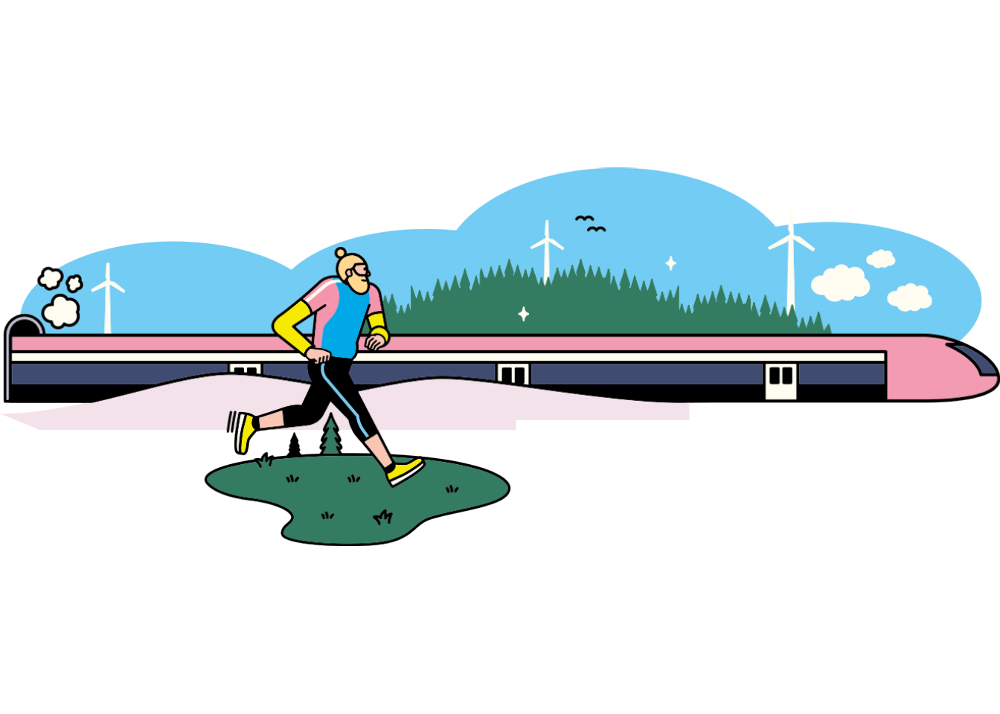
Här visas hur den totala energianvändningen per invånare fördelar sig mellan olika huvudområden, såsom industri och byggverksamhet, transporter samt övriga tjänster. Slutanvändning av energi anges i megawattimmar (MWh) per invånare i kommunen.
Uppgifterna omfattar all slutanvändning av energi inom kommunens gränser, oavsett bränsletyp. För vissa kommuner och år kan data saknas på grund av sekretess.
Data är hämtat från Rådet för främjande av kommunala analyser (2025) som i sin tur hänvisar vidare till Energimyndigheten (2025a) och Statistiska centralbyrån (SCB) (2025).
I de flesta kommuner är transporter den största energianvändande sektorn per capita, där Knivsta har de lägsta nivåerna. Älvkarleby sticker ut med en energianvändning per capita inom industri och byggverksamhet på över 350 MWh, medan kommunen med näst högst värde under perioden är Tierp med nära 12,5 MWh per capita.
I Heby och Uppsala utgör energianvändningen från övriga tjänster också en stor andel av kommunens totala energianvändning per capita.
Slutanvändning av energi i hushåll
Detta avsnitt visar hushållens slutanvändning av energi per invånare, uppdelad på småhus, flerbostadshus och fritidshus. Uppdelningen ger en tydligare bild av hur boendestruktur påverkar energianvändningen i olika kommuner.
Slutanvändning av energi anges i megawattimmar (MWh) per invånare och omfattar all energi som används i hushåll inom kommunens gränser.
Data är hämtat från Rådet för främjande av kommunala analyser (2025) som i sin tur hänvisar vidare till Energimyndigheten (2025a) och Statistiska centralbyrån (SCB) (2025).
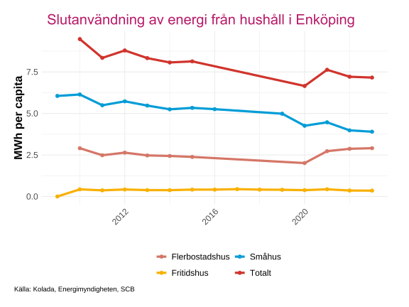
Ladda ner
{kind=link}
{kind=link}
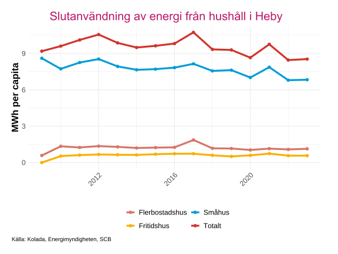
Ladda ner
{kind=link}
{kind=link}
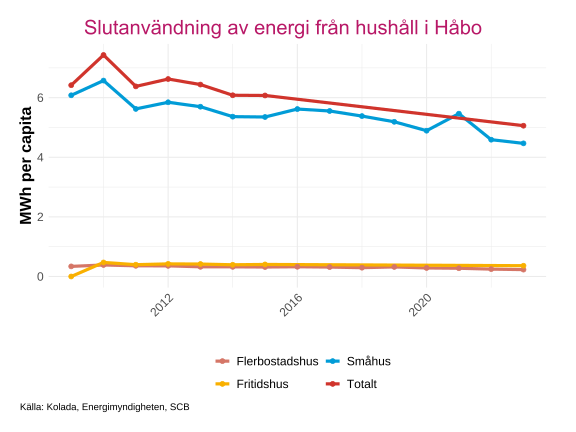
Ladda ner
{kind=link}
{kind=link}
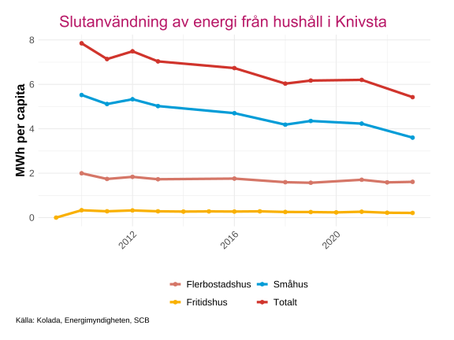
Ladda ner
{kind=link}
{kind=link}
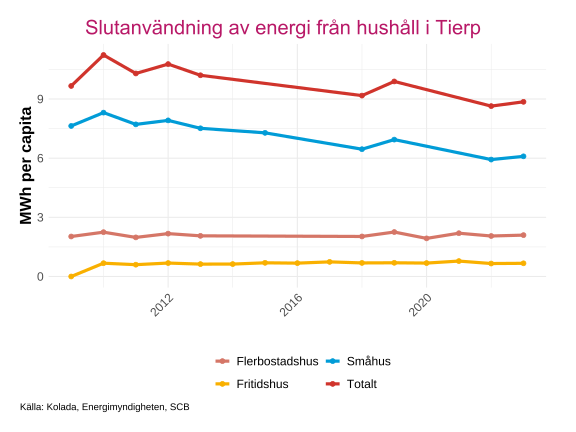
Ladda ner
{kind=link}
{kind=link}
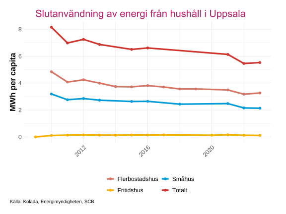
Ladda ner
{kind=link}
{kind=link}
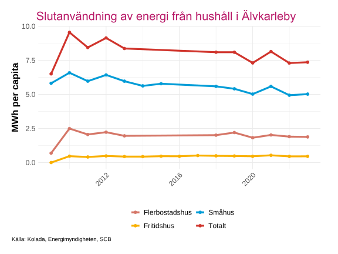
Ladda ner
{kind=link}
{kind=link}
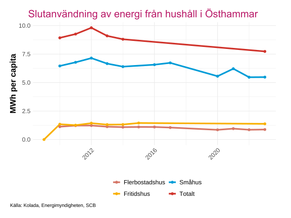
Ladda ner
{kind=link}
{kind=link}
Heby och Tierp är de kommuner med högst energianvändning per capita för hushåll, nära 9 MWh, medan Håbo har den lägsta på runt 5 MWh per capita. I samtliga kommuner står småhus för den största energianvändningen, med undantag för Uppsala där flerbostadshus är den största kategorin.
Att Håbo uppvisar en högre energianvändning i småhus än i totalen år 2021 beror på att uppgifter om fritidshus saknas för detta år. Till följd av detta saknas även ett korrekt totalvärde, vilket gör att linjen för total energianvändning passerar förbi år 2021 i figuren.
Elproduktion
Detta avsnitt visar hur elproduktionen i länet fördelar sig mellan olika produktionsslag över tid. För solkraft finns statistik endast tillgänglig från och med 2021. Vissa värden har tagits bort av sekretesskäl och data för solkraft under 2022 har reviderats för samtliga kommuner och län av SCB.
Data är hämtad från Statistiska centralbyrån (SCB) (2025).
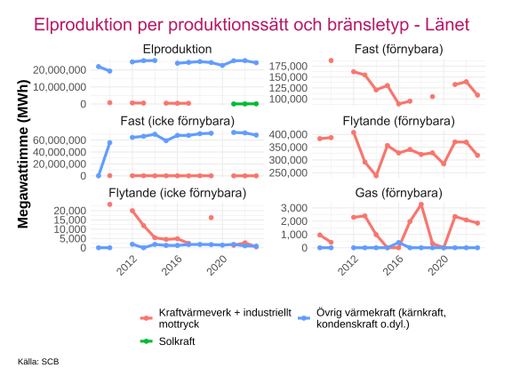
Ladda ner
{kind=link}
{kind=link}
Elproduktionen i länet kommer framför allt från övrig värmekraft (kärnkraft, kondenskraft m.m.), där kärnkraftverket Forsmark i Östhammars kommun står för den största delen, vilket syns under Fast (icke förnybara) och Elproduktion.
Elhandelspriser
Detta avsnitt visar hur elhandelspriserna har utvecklats över tid i Sveriges fyra elområden, samt hur priserna skiljer sig mellan olika avtalstyper. Medelpriserna avser erbjudna priser för nytecknade elavtal och är exklusive elskatt, moms samt eventuella rabatter eller bonusar. Priserna presenteras per månad, med start i januari 2022.
Data är hämtad från Statistiska centralbyrån (SCB) (2025).
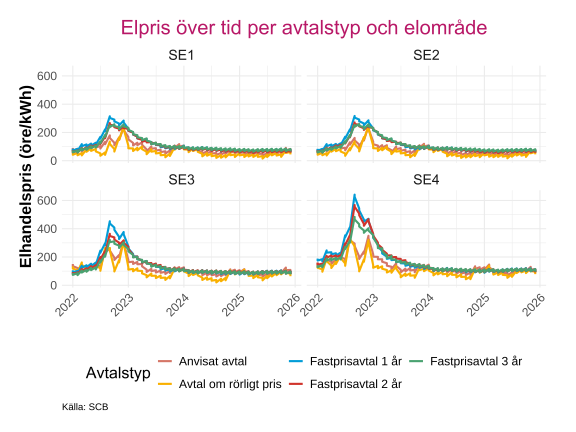
Ladda ner
{kind=link}
{kind=link}
Det framträder en tydlig prisökning i elmarknaden i slutet av 2022, varefter priserna återgår till nivåer som är jämförbara med tidigare perioder. Priserna varierar också tydligt mellan elområdena, där SE4 uppvisar de högsta prisnivåerna medan SE1 och SE2 ligger på de lägsta nivåerna. Vidare verkar avtal om rörligt pris generellt ha de lägsta priserna i samtliga elområden under större delen av perioden, även under prisökningen i slutet av 2022.
Medelpriser per avtalstyp och kundategori
| Genomsnittligt elpris per avtalstyp och kundkategori mellan 2022 - 2025 | |||
|---|---|---|---|
| Elområde SE3 | |||
| Avtalstyp | Kundkategori | Medelpris (öre/kWh) | Medelpris efter 2022 |
| Avtal om rörligt pris | Större hushåll | 88.25 | 59.60 |
| Avtal om rörligt pris | Villa med elvärme | 88.69 | 60.15 |
| Avtal om rörligt pris | Villa utan elvärme | 94.29 | 65.86 |
| Avtal om rörligt pris | Lägenhet | 105.14 | 77.06 |
| Anvisat avtal | Större hushåll | 110.96 | 81.40 |
| Anvisat avtal | Villa med elvärme | 111.55 | 82.03 |
| Anvisat avtal | Villa utan elvärme | 116.54 | 87.55 |
| Fastprisavtal 3 år | Större hushåll | 121.00 | 103.28 |
| Fastprisavtal 3 år | Villa med elvärme | 121.70 | 103.90 |
| Anvisat avtal | Lägenhet | 127.16 | 98.43 |
| Fastprisavtal 2 år | Större hushåll | 127.40 | 102.32 |
| Fastprisavtal 3 år | Villa utan elvärme | 127.59 | 110.04 |
| Fastprisavtal 2 år | Villa med elvärme | 127.99 | 102.85 |
| Fastprisavtal 2 år | Villa utan elvärme | 133.25 | 107.56 |
| Fastprisavtal 1 år | Större hushåll | 135.01 | 100.54 |
| Fastprisavtal 1 år | Villa med elvärme | 135.59 | 101.04 |
| Fastprisavtal 3 år | Lägenhet | 137.93 | 119.88 |
| Fastprisavtal 1 år | Villa utan elvärme | 140.91 | 106.39 |
| Fastprisavtal 2 år | Lägenhet | 143.77 | 117.01 |
| Fastprisavtal 1 år | Lägenhet | 151.38 | 116.73 |
| Källa: SCB | |||
Avtal om rörligt pris uppvisar det lägsta genomsnittliga elpriset under perioden för samtliga kundkategorier. Skillnaden mellan de lägsta och högsta genomsnittliga priserna uppgår till cirka 50 öre per kWh för varje kategori.
Antal vindkraftverk och installerad effekt
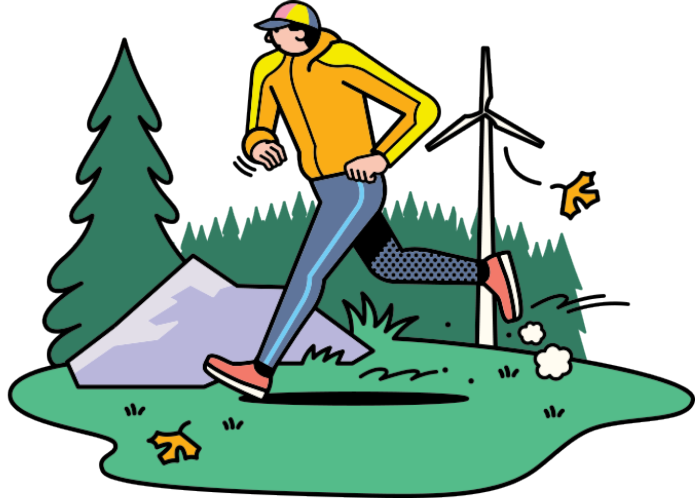
Detta avsnitt visar utvecklingen av vindkraft i länets kommuner, både i form av antal vindkraftverk och installerad effekt. Data är hämtat från Energimyndigheten (2025a). Varje stapel representerar kommunens värden för respektive år. Vissa värden kan anges som 0 pga osäkerhet eller sekretesskäl.
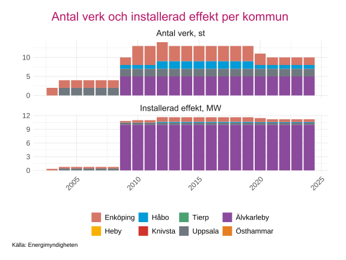
Ladda ner
{kind=link}
{kind=link}
Sedan 2009 har Älvkarleby haft den största installerade effekten i länet och har en stor del av de senaste åren även haft det högsta antalet verk. Antalet vindkraftverk har sedan 2019 sjunkit i länet, till följd av nedgångar i Enköping och Håbo.
Utvekling av nätanslutna solcellsanläggningar
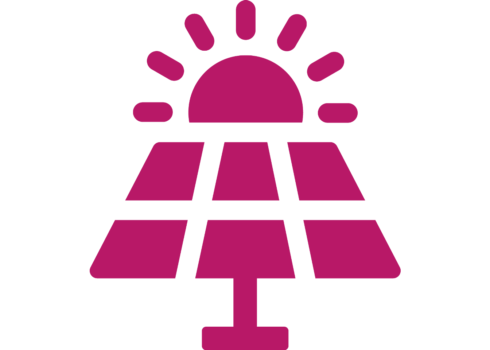
Detta delkapitel visar utvecklingen av nätanslutna solcellsanläggningar i länet från och med år 2016. Två mått presenteras: installerad effekt per capita (Watt per person) och installerad effekt per landareal (Watt per kvadratkilometer). Data är hämtat från Energimyndigheten (2025a) och speglar kommunvisa skillnader i hur geografisk yta och befolkningsstorlek påverkar värdena.
.svg)
Ladda ner
.png){kind=link}
År 2024 har Heby och Håbo den högsta installerade effekten per capita från solceller, medan Uppsala och Älvkarleby har de lägsta värdena. Det är viktigt att beakta att effekten per capita påverkas av befolkningsutvecklingen i respektive kommun. Kommuner med stark befolkningstillväxt kan visa en lägre ökning av effekt per capita även om den totala installerade effekten ökar, vilket kan ge en viss fördröjning i mätbara effekter.
.svg)
Ladda ner
.png){kind=link}
Håbo uppvisar markant högre effekt per landareal från solceller än övriga kommuner i länet. Knivsta och Uppsala ligger på andra och tredje plats, medan Tierp och Östhammar har lägst effekt per landareal. Denna indikator ger en annan dimension än per capita, då kommuner med liten yta men relativt många solcellsanläggningar kan få höga värden, medan större kommuner med spridd bebyggelse kan ge lägre värden även med fler anläggningar totalt.
Elavbrott
Elavbrott påverkar både hushåll och verksamheter och är en viktig indikator på elnätets leveranssäkerhet. I detta avsnitt redovisas två mått som beskriver omfattningen av elavbrott i kommunerna.
SAIDI: Genomsnittlig total avbrottstid per kund för elavbrott längre än 3 minuter, inklusive både planerade och oplanerade avbrott.
CEMI-4: Andel kunder som haft minst fyra oplanerade elavbrott längre än 3 minuter under året.
Data är hämtat från Rådet för främjande av kommunala analyser (2025) som hänvisar vidare till Energimarknadsinspektionen (2025).
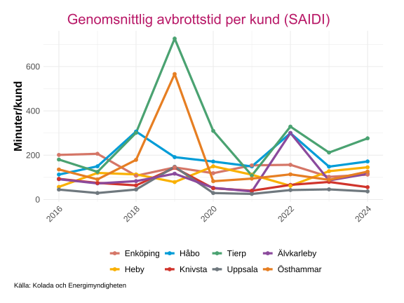
Ladda ner
{kind=link}
{kind=link}
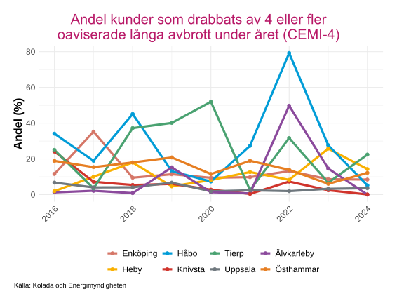
Ladda ner
{kind=link}
{kind=link}
Den genomsnittliga avbrottstiden per kund har varit högst i Tierp bland länets kommuner. Det syns tydliga toppar under 2019 och 2022 för flera kommuner, vilket delvis kan förklaras av stormarna Alfrida och Malik.
När det gäller andelen kunder som drabbats av fyra eller fler oaviserade avbrott syns fortfarande en markant topp 2022 för flera kommuner, där Håbo hade den högsta andelen. Däremot märks ingen tydlig topp 2019 i denna indikator, vilket tyder på att det antingen inträffade färre än fyra mycket långa elavbrott, eller att endast ett fåtal kunder var utan el under längre perioder, framför allt i Tierp och Östhammar.
Framtida elbehov
Detta kapitel analyserar framtida elbehov i Sveriges län med utgångspunkt i Energimyndighetens rapport Energimyndigheten (2025b). Baserat på dessa nationella scenarier har Energimyndigheten tagit fram ett kompletterande underlag som belyser hur elbehovet kan utvecklas på länsnivå under olika framtidsantaganden. Syftet med underlaget är att ge en övergripande och jämförbar bild av möjliga utvecklingsbanor, snarare än att ersätta mer detaljerade och lokalt anpassade analyser i enskilda län. Data presenteras i gigawattimmar (GWh).
Analysen bygger på tre alternativa framtidsscenarier:
- Beslutad policy, som utgår från redan fattade politiska beslut och styrmedel,
- Internationell tillväxt, som antar en stark global ekonomisk utveckling med hög efterfrågan på el, samt
- Lokal miljöhänsyn, som fokuserar på regionala initiativ och en mer miljödriven omställning.
Datat som presenteras här är inte statistik och de inget av olika scenarierna ska ses som mer eller mindre sannolikt än det andra.
För en fördjupad förståelse så hänvisas läsaren till Energimyndigheten (2025b) samt hemsidan om långsiktiga scenarier hos Energimyndigheten: Långsiktiga scenarier.

Ladda ner
{kind=link}

Ladda ner
{kind=link}

Ladda ner
{kind=link}
De lägsta prognostiserade värdena hittas för lokal miljöhänsyn, men det skiljer sig inte mycket jämfört med beslutad policy. En sak som sticker ut för internationell tillväxt är att datacenter beräknas att ha ett elbehov från 2040 och framåt.
Inrikes transporter förväntas ha ett mycket större elbehov och ligger till stor del bakom ökningen av förväntat elbehov i alla 3 scenariers.
Elbehov detaljerad nivå
Dessa scenarier kan vidare brytas ned och aggregeras till mer detaljerade sektorer för att möjliggöra en mer finfördelad analys av elbehovets sammansättning. I detta arbete grupperas elanvändningen bland annat inom följande huvudkategorier:
Industri, inklusive industriell elanvändning och småhus med elbaserad värme,
Datacenter, som behandlas som en egen kategori,
Service, omfattande driftel inom serviceverksamhet samt jordbruk, skogsbruk och fiske, liksom lokaler med elbaserad värme,
Bostäder, uppdelat i flerbostadshus och småhus med elbaserad värme samt hushålls- och fastighetsel,
Inrikes transporter, inklusive vägtransporter (personbilar, bussar, lätta och tunga lastbilar), arbetsmaskiner inom industrin samt bantransporter.
Den kategori som har högst förväntat elbehov är driftel, service, jordbruk, skogsbruk och fiske som till 2030 förväntas ha ett elbehov på över 1000 GWh enligt alla scenarion.
Nästan alla kategorier har en positiv trend med ökande elbehov, men när det gäller lokaler och småhus med elbaserad värme så är det ett minskande behov som förväntas enligt alla scenarion. För industri så har beslutad policy och internationell tillväxt en lätt ökande trend av elbehovet, medan lokal miljöhänsyn har ett minskande behov fram till 2045.
Angående vägtransporter så är det personbilar som förväntas ha störst elbehov, med en ökning från 57-60 GWh år 2025 till 578-688 GWh år 2050.
Källor
Energimarknadsinspektionen. 2025. ”Energimarknadsinspektionen”. https://ei.se/.
Energimyndigheten. 2025a. ”Energimyndighetens statistikdatabas”. https://pxexternal.energimyndigheten.se/pxweb/sv/Energimyndighetens_statistikdatabas/.
Energimyndigheten. 2025b. ”Scenarier över Sveriges energisystem: Vägar till ett energisystem med nettonollutsläpp 2050”. Rapport ER 2025:13. Energimyndigheten.
Rådet för främjande av kommunala analyser. 2025. ”Kolada – Jämför och analysera nyckeltal i kommuner och regioner”. https://www.kolada.se/.
Statistiska centralbyrån (SCB). 2025. ”Statistikdatabasen”. https://www.statistikdatabasen.scb.se/pxweb/sv/ssd/.